2007年12月22日～23日 東京～豊橋
2007年の12月、大学サイクリングクラブの交流相手の京都の大学が部室でクリスマスパーティをやるとのことだった。
そこで、ロードバイクで自走で、3日以内を目標に京都まで向かうことにした……のだが……
夜の箱根峠が雨で膝を冷やしてしまい、脚を壊してしまった。2004年の正月以来2回目。膝に爆弾を抱えるようになってしまった。
今回は写真のタイムスタンプの時間も書いていく。
2007年12月22日 東京～蒲原
出発時間は不明。
国道1号（第二京浜）多摩川大橋。15時44分。
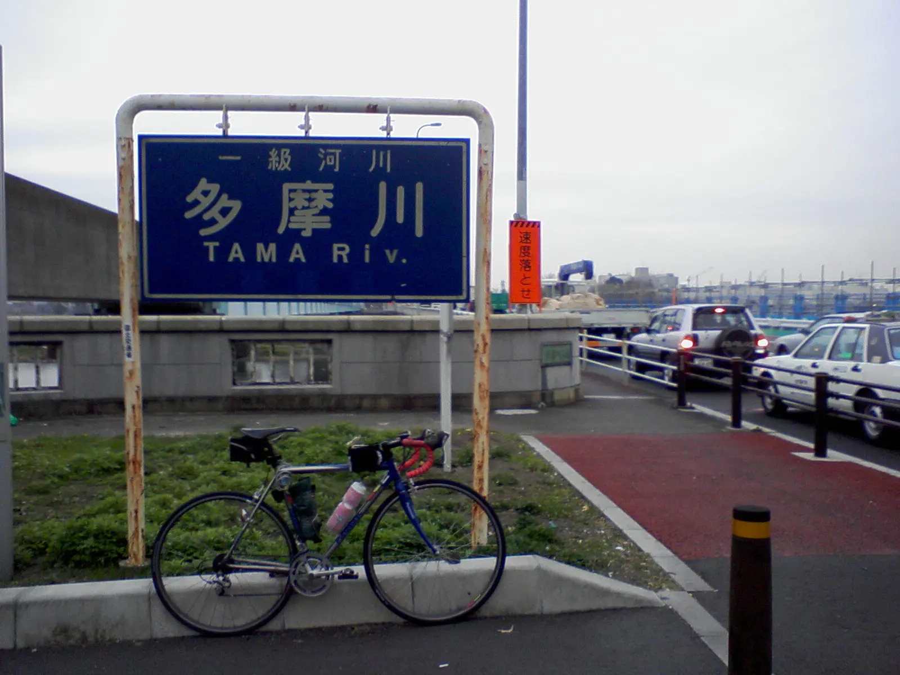国道1号、横浜。16時19分。
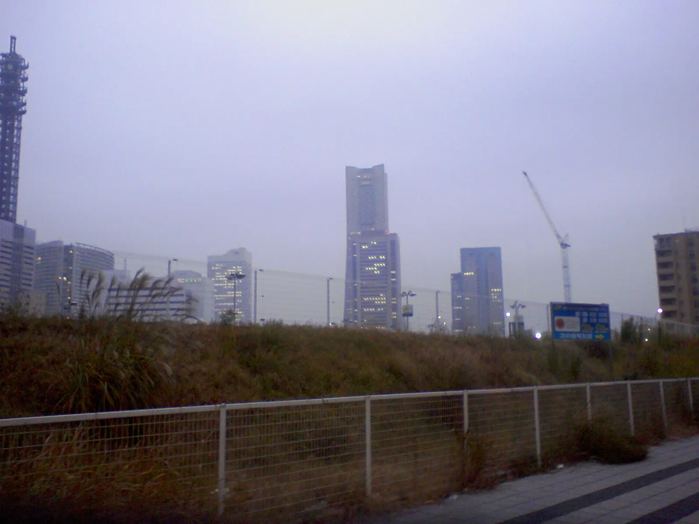小田原。19時53分。雨が降ってきてしまった。
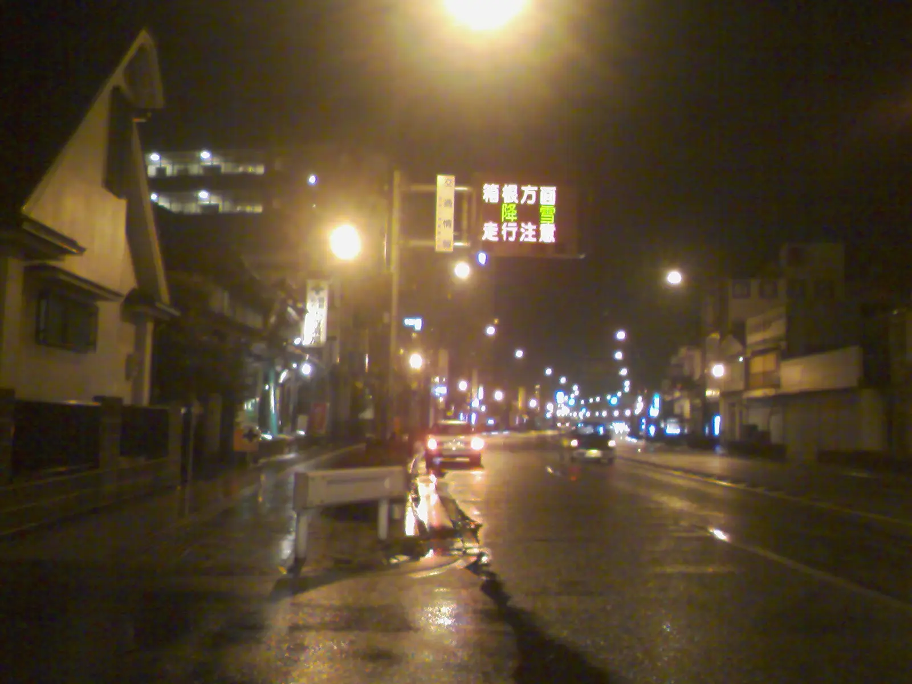20時20分。これも小田原付近だと思われるが不明。
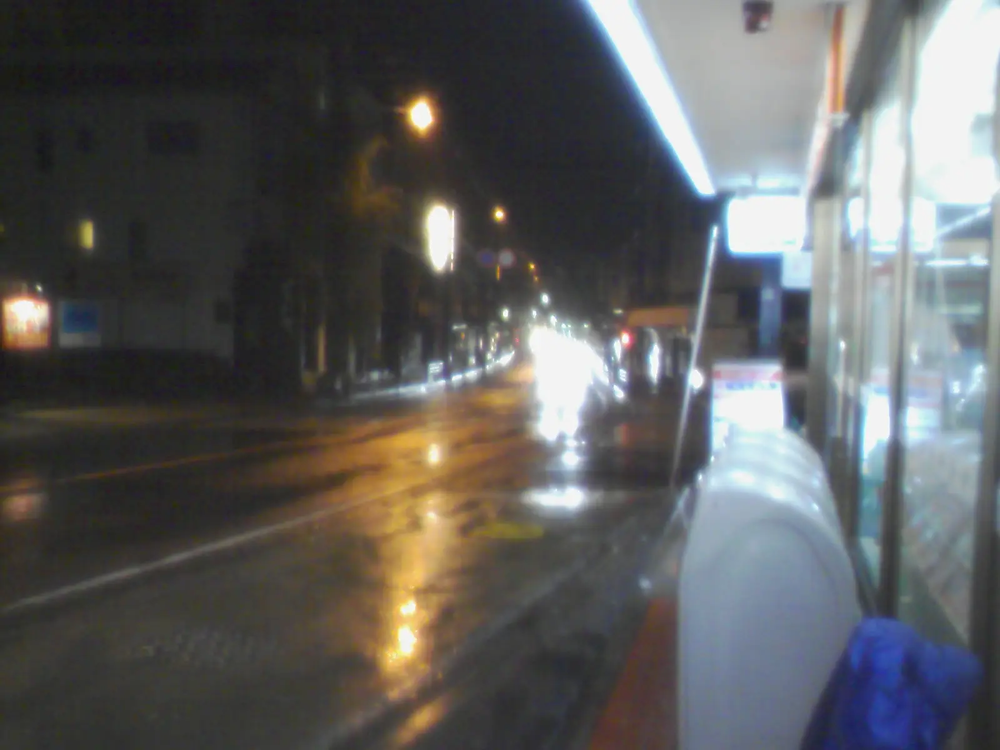箱根の上りにかかる。20時55分。
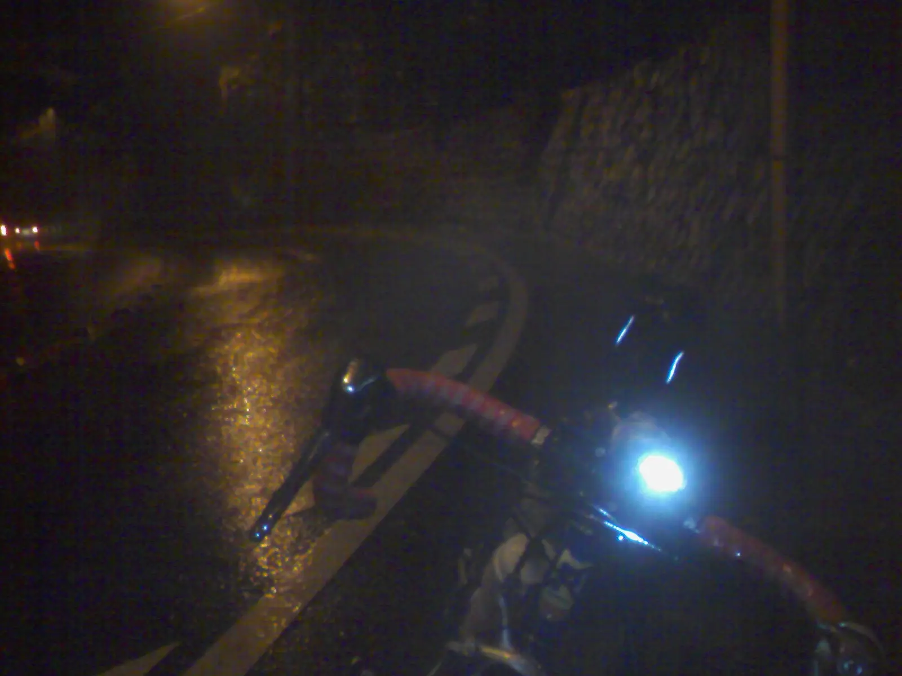箱根の途中のファミマ。21時58分。
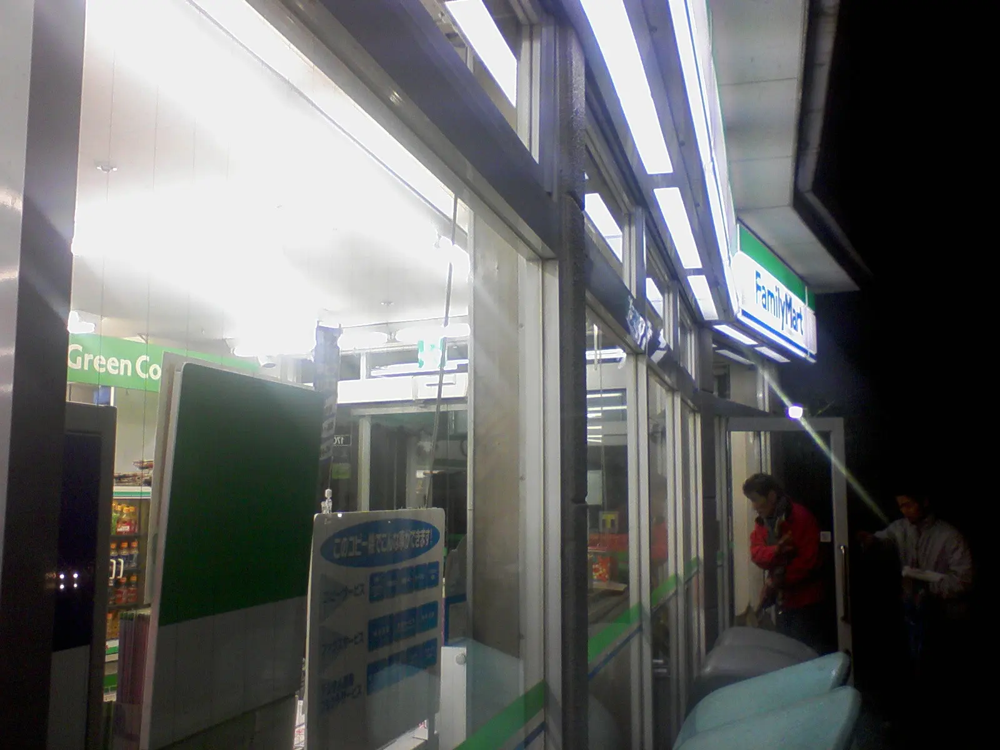箱根、国道1号線最高点。22時39分。このように、12月で雨が降っているので体を非常に冷やしてしまった。膝を冷やしてしまった。

22時51分。芦ノ湖畔のコンビニ。12月なので箱根駅伝の掲示がある。
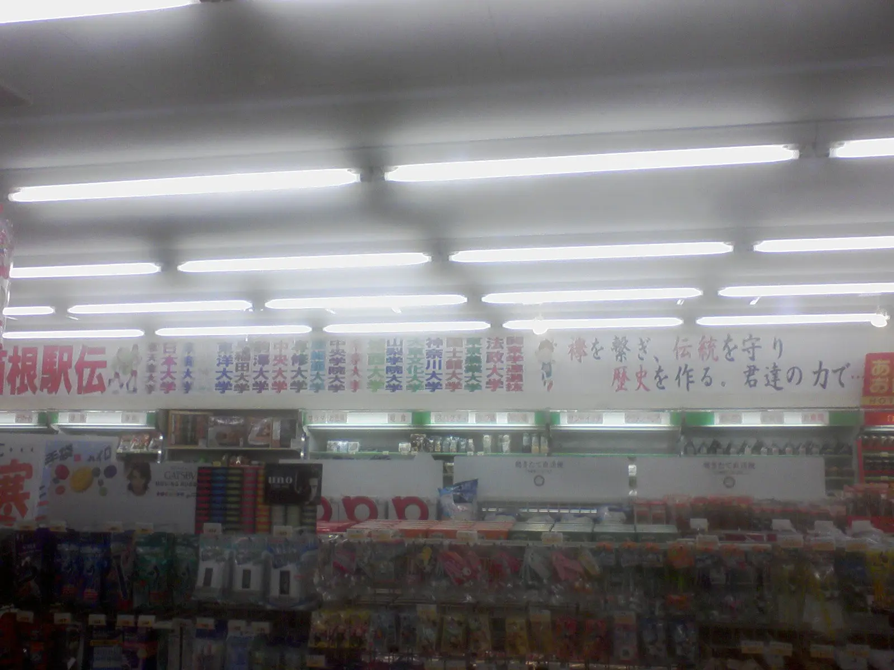2007年12月23日 蒲原～豊橋
さて、深夜に走って、新蒲原駅で駅寝というか仮眠した。とにかく寒かった。古新聞を服の中に入れて暖を取った。写真は濡れたタイツを脱いだところ。5時32分。
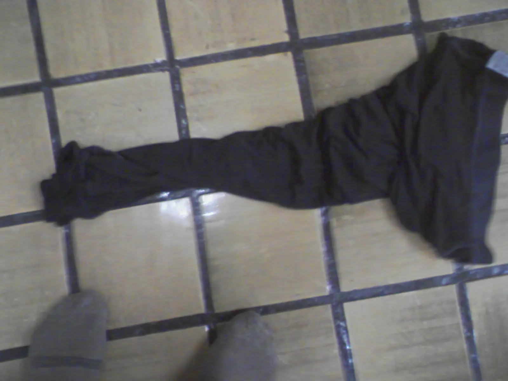蒲原～由比間の旧道。7時02分。
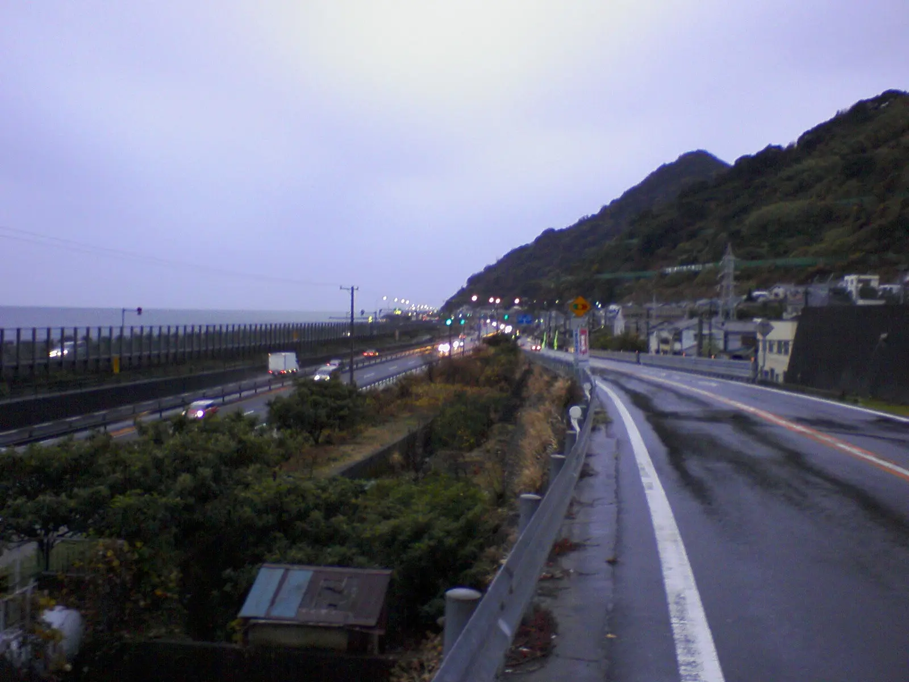道の駅宇津ノ谷峠。この日は晴れた。10時53分。
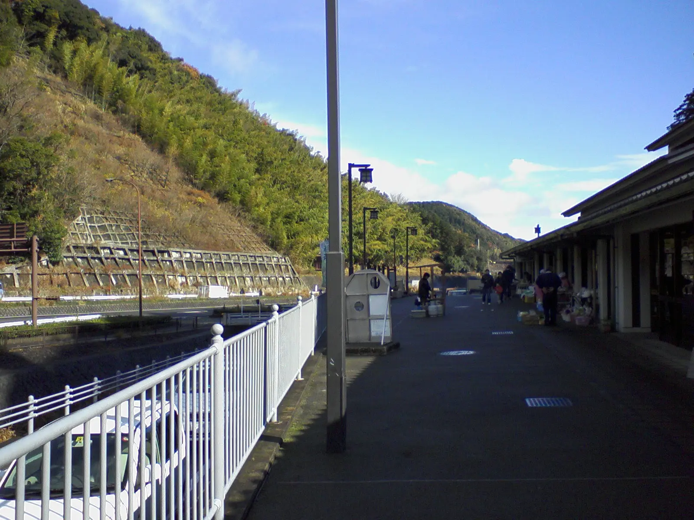大井川橋。12時27分。
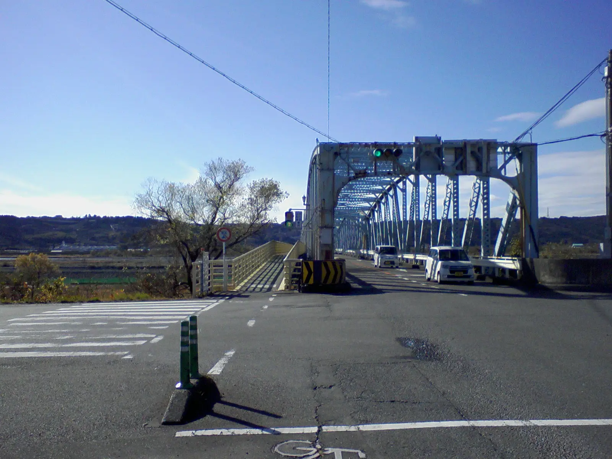場所不明。どこかのコンビニ。14時33分。
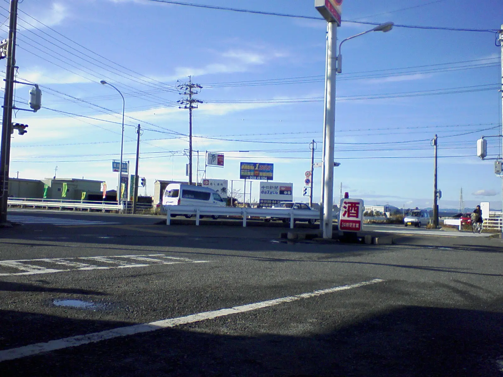国道1号線新天竜川橋。15時40分。
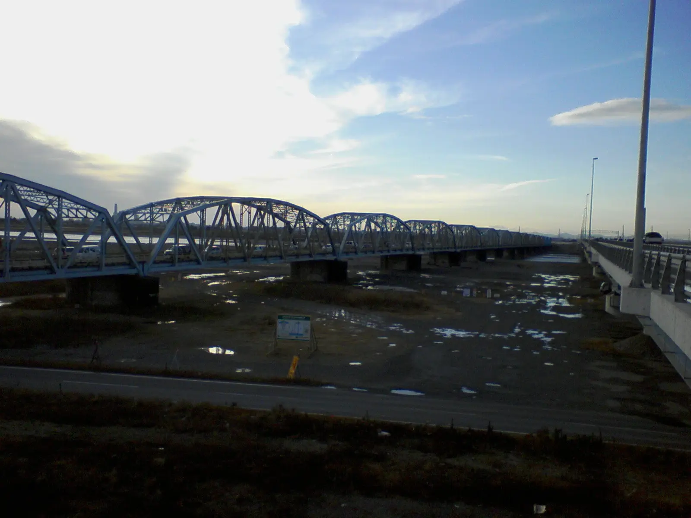さて、浜松くらいで膝が痛くてどうにもならなくなった。ドラッグストアでテーピングテープを買って膝にテーピングをしたが、すると今度は、痛い側をかばって反対の膝がダメになった。両膝をガチガチにテーピングしたが、こんどは両足の足首がダメになってしまった。
浜名湖、22時04分。明らかに異常に時間がかかっている。もう脚が限界を迎えていた。
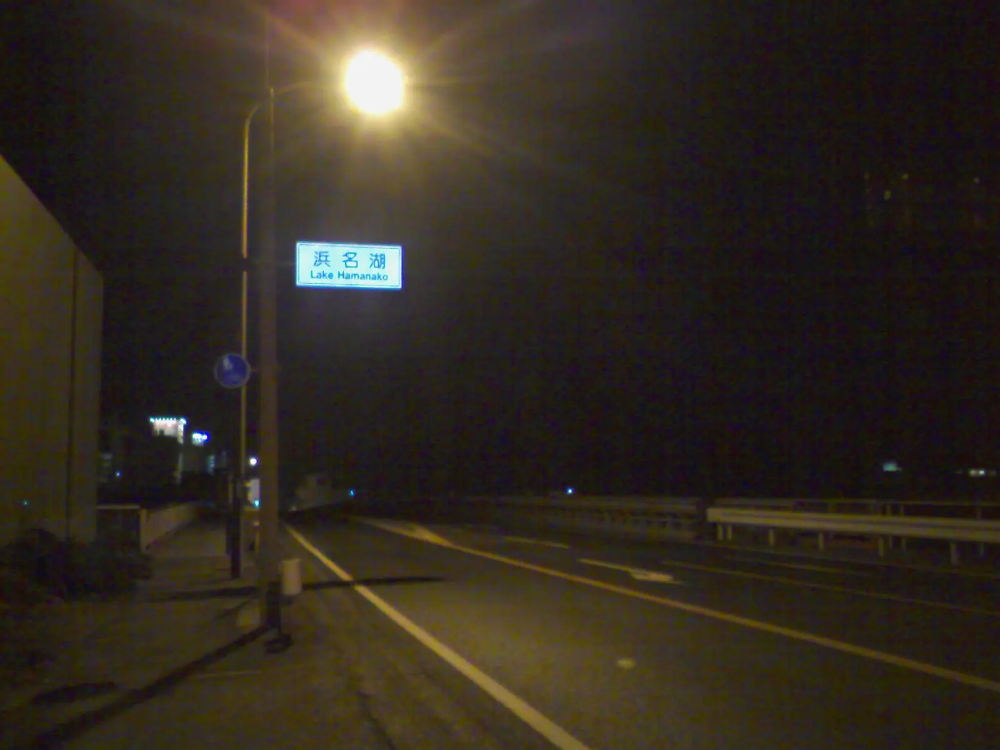このあと、無理を押して豊橋まで走り、ネカフェに駆け込んで休んだ。
そのまま寝て、諦めて豊橋駅から京都へ輪行で向かった。歩ける程度ではあったようだ。
おわり。
2026年1月22日記事公開